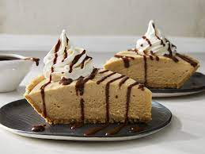

Peanut butter pie recipe

Very simple to make pie that has many wanting for more!
Ingredients
- Cream cheese
- Peanut butter
- Confectioners' sugar
- Frozen whipped topping
- Graham cracker crust
- Peanut butter cups
Directions
- Mix cream cheese, peanut butter, and confectioner' sugar together until smooth. Fold in 1/2 of the whopped topping, then spoon the mixture into graham cracker crust.
- Spread remaining whipped topping over the peanut butter mixture and garnish with peanut butter cups. Chill for at least 2 hours or overnight before serving
source
about